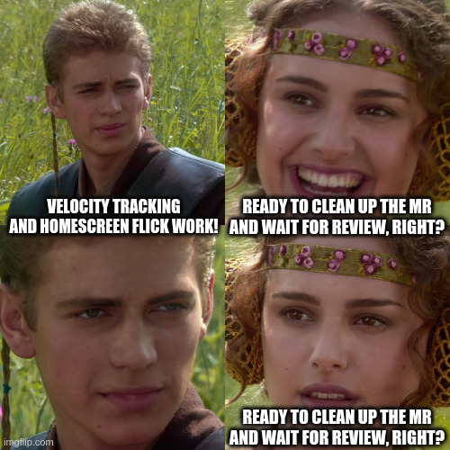
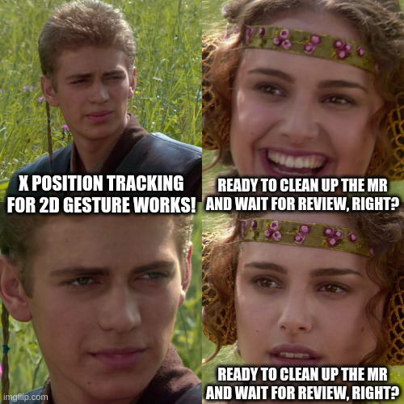
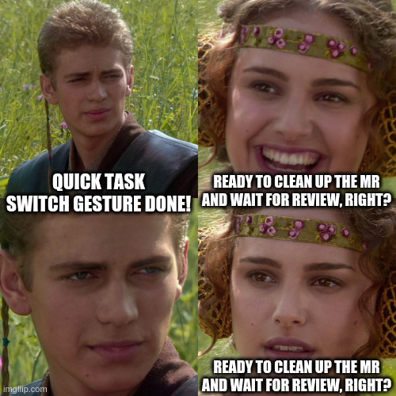
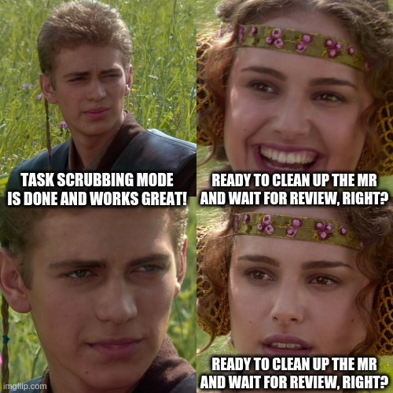

A few months ago I was kind of toying with the idea to start contributing to Plasma Mobile because I was getting increasingly fed up with Android and I realized if Linux Mobile was going to be my daily driver before I need to buy a new phone I better help out.
Then, after a few trivial commits I've seen that for the Plasma 6 release the navigation gestures were (at least temporarily) turned off - and since I am a very big fan of navigation gestures because they are objectively the best way to interact with a phone I just couldn't have that and I went about fixing them.
Why did the gestures even break by the upgrade to Plasma 6? Well, in Plasma Mobile 5 the navigation gestures were implemented in quite a hacky way - an invisible panel at the bottom screen edge that captured finger touches and handled the gesture and visual effect. While this worked this required a bunch of data moving around from KWin to the shell to show the window thumbnails which is unnecessary overhead.
So for Plasma 6 Devin Lin rewrote the entire task switcher, including the navigation gestures, to be a KWin effect which should make it perform better and use more of its infrastructure to need less bespoke code.
This went mostly quite smoothly, with few hiccups along the way. Unfortunately one of those hiccups was gestures (which now moved to KWin's EffectTogglableTouchBorder interface) simply not working anymore.
The fix was surprisingly simple: In the constructor for setting up the task switcher, including all shortcuts and gestures for it, the reconfigure function was simply never called which in turn meant the KWin::EffectTogglableTouchBorder::setBorders function was never executed.
As you might imagine "setting the border" is quite a crucial part of having working gestures and one function call later gestures worked again!
Disclaimer: I'm shuffling around the timeline a bit to make this post easier to follow, this part actually didn't happen until quite late.
Turns out the gestures did work - but oddly enough only after opening the Action Drawer at least once after every screen geometry change (eg: screen rotation). But the Action Drawer doesn't have anything to do with the task switcher and its gestures, how did it have an effect on them?
Well the reason is-... Honestly, I have no freaking clue. It makes no sense, but I also didn't really investigate it all that much, because I stumbled on the root cause by accident quite quickly.
It turns out that the KWin people have done a good job at making the setBorders function quite safe to use and before reserving a touch border for this effect they first un-reserve anything that used to be on that border beforehand so two effects don't have to argue about who is allowed to react to the gesture.
The problem is that for some reason in the reconfigure function in the task switcher effect logic also unreserved and reserved the borders, kind of doing setBorders job already before calling it.
Now why exactly that interfered with reserving the border I don't know, in theory setBorders should unreserve our previous stupidity and set us up properly - but evidently it didn't and when I removed our unnecessary border shenanigans in reconfigure suddenly gestures magically started working again.
Well, it turns out that while KWin's border gesture infrastructure is quite nice, it also... doesn't allow customizing the distance a user needs to move their finger for a gesture to be "completed". It also turns out that on the PinePhone (and probably quite a few other phones) this lead to the gesture being... pretty much impossible to use. You just had to move your finger waaaaaayyyy too far (on the PinePhone about 3/4 of the screen height, see MR linked in next paragraph for video examples) to invoke the gesture. That's just unacceptable!
Luckily the fix is quite easy and a quick MR to KWin allowed us to set custom gesture distances-... or so I thought.
I mean, it did allow us to set the gesture distance, but that didn't mean the gestures were much better.
Ooooooh boy.
I'll have you know that I have quite strong feelings towards what navigation gestures need to be able to do to be a nice user experience.
One very crucial part of this for me is being able to "flick away" an app and go to the homescreen. The current navigation gestures didn't support that - to go to the homescreen you needed to open the switcher, then tap on the side to close it. That's TWO WHOLE FINGER TAPS - UNACCEPTABLE (Well, one drag and one tap, but let's not be pedantic).
And while we're at it, having "quick task switch" gestures would also be really nice - but those will come for later MRs, first I need to just revamp the task switcher backend to support tracking gesture velocity to discern between a drag with a pause at the end or a quick flick.
I'm gonna gloss over a lot of the details, but for a quick too-long-didn't-care-enough-to-write-it-all-down: KWin's gesture system doesn't expose gesture positions, just percentage based activation factors so I had to do some work to massage that into giving me the right data.
Now that we magically get the "primary" and "orthogonal" gesture position from KWin we can sit down to create velocity tracking
My first gut reaction was to implement a normal moving average calculation and after chatting a bit with Devin it seems other projects went for a similar approach. But then I looked at the moving average calculation in other places and... it looked so complicated and bloated and over the top to store all the past values and iterate through the entire list of them to average them out and doing all that every frame and ...
As someone who initially learned programming by working with microcontrollers this was unacceptable (I see, this word is becoming a recurring theme). Now let's step back a bit and figure out what we actually need. The moving average is just there to filter out spikes in movement speed, be it due to inaccurate sensor touch screen readings, frametime spikes or accidentally slipping with the finger. We only want to filter, we do not actually care about receiving a mathematically accurate moving average. In fact we couldn't care less about getting a mathematically accurate moving average for our velocity.
Damn. Now if only someone knew how to choose and design filters.
Looks at Uni curriculum
Oh would you look at that! Signal theory, control technology and filter design this semester. I can finally procrastinate AND study for a course at the same time!
Even though I have a course on filter design at Uni, I never said I was any good at it. I mean, I'm okay enough, but not good enough to explain this filter better than Wikipedia does. The upshot of it is: It is a filter that does not need to store the entire history it tries to filter (no ugly array of values to iterate through: check), it is essentially a low pass filter (filters out transient spikes in movement speed: check) and it can be implemented in essentially 30 lines of code in a single function without any loops (not overcomplicated and bloated: check).
In fact, the EWMA filter is just a single formula that takes the previous filtered velocity, the current speed in the last time step (~frame) and a magic smoothing factor and spits out the filtered velocity updated with the newest sensor values. So that's just two lines for the actual filter (1 per axis) and some boilerplate. Neat!
Usually you'd pick a smoothing factor based on the sampling rate of your system and your desired time constant. To emulate the behavior of moving averages I found elsewhere I picked a time constant of 30ms. This (very roughly) means, when starting from 0, a sudden input value is applied to the filter, it will reach ~63% of the input after 30ms - and after another 30ms it will have reached ~90%. This is roughly in line with an "proper" moving average with a window of 60-70ms.
The problem we now have is that we don't have a fixed sampling interval - we get new gesture positions whenever KWin deems fit to give us some (which might be seconds apart if the user doesn't move the finger for a while). Sooooo what now? If we get a very long timescale our "roughly equivalent to a 60ms moving average" goes right out of the window.
Well, luckily with one simple formula we can calculate our smoothing factor based on a desired time constant and a certain sampling interval which we can call every time we get a new value:
smoothing_factor = 1 - exp(-delta_time/desired_time_constant)
(Maybe someday I'll add a LaTeX parser to the blog. Or I just copy in a screenshot. We'll see)
Now there is one remaining problem: As a self-respecting microcontroller dev who absolutely knows he is not restricted by a 16MHz CPU without a floating point arithmetic unit, but still cannot shake old habits having e to the power of a floating point number in that formula hurts.
Luckily there is an approximation formula that is a bit cheaper
smoothing_factor = delta_time/desired_time_constant
That approximation formula should only be used when the delta time is a lot smaller than the desired time constant, which we
checks notes
Oh. We don't really satisfy that condition. Eh. Whatever. We only need it to filter out super high weird spikes and be roughly in the right ballpark, we don't need to propulsively land a rocket.
Some manual checks later show we'll not be all that far off the "correct" formula and we need to put a clamp on it anyways to always do a bit of smoothing so we'd deviate from the right formula anyways.
Do our "recalculate smoothing factor on every new value" shenanigans interfere with the stability or correctness of our filter? Probably, I dunno. But it's probably fine and throughout all of my testing, both throwing in arbitrary test values and empirical testing while using the gestures it all felt nice, so I give it my seal of approval!
Now... where were we? Right!
And now with a simple check on speed > threshold we can detect flicks! And voila - an upwards flick goes to homescreen!

Well, I know I said I'll replicate the old gesture behavior without touching any functionality, but the gesture feels kinda bad when it only goes up and down and doesn't follow the finger left and right as well - and KWin now also magically exposes the orthogonal gesture position so we can really quickly hook that up

As a remnant from Devin's move to a KWin effect there was a bit of a mess of what keeps state where - he simply didn't have enough time to refactor the entire thing and so there were a few places that kept track of the same-ish state and needed to be synced or otherwise there'd be really weird logic bugs.
No problem, I can refactor that and take some work off of Devin.
But you know what, now the task switcher code feels kind of clean and nice and it would be so easy to just add a few lines of logic to discern between an upwards flick and a diagonal flick to switch to neighbouring tasks.
Ah to hell with it, let's add that as well!

Remember how I said I have opinions on what good gestures are?
Well, I really really really dislike what Android does with their task switcher where it uses some heuristic to only reorder the tasks based on recency after you have been in a task for a while. This allows you to use the quick task switch gesture several times in a row to go "further back" in the task history.
But it's also kind of a black box as to when that happens and it really annoys me a lot - besides, the quick task switch gesture is neat for one switch, but gets very tiring to use when you have to use it several times in a row.
So how about a bespoke "task scrub" gesture that activates on a mostly-horizontal gesture invocation and allows to scrub through a large number of recent tasks.

I've skipped over a lot of detail and some entire sidequests in this story (with a lot of potential for more jokes) for the sake of brevi-WOW HOW IS IT OVER 2000 WORDS ALREADY?!
Uhm.
There's still some bugs to fix, some tasks for later MRs (though much fewer than I thought there would be) and some decisions to make, but for now this has been my small odyssey about first fixing then slightly extending then completely rewriting the navigation gestures for Plasma Mobile